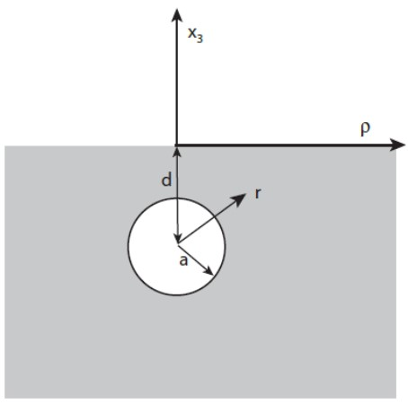
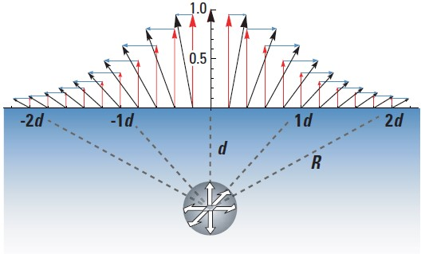

1. Deformación volcánica
El monitoreo de la deformación volcánica es una de las herramientas más importantes para estudiar la actividad asociada a volcanes activos, ya que permite cuantificar información muy útil sobre lo que está ocurriendo en el interior del edificio volcánico. El cálculo de los desplazamientos de la estructura volcánica ayuda a comprender los movimientos de magma ocurridos bajo la superficie y además, apoyan otras observaciones (sismicidad, análisis de gases, entre otros), con el fin de reforzar el conocimiento de los mecanismos responsables de las deformaciones registradas y de este modo, mejorar en la evaluación del riesgo asociado a la actividad volcánica (Córdova et al., 2015).
La deformación de la superficie volcánica puede ser causada, entre otras razones, por el movimiento del magma, redistribución de cuerpos de agua, desgasificaciones o por variaciones de presión interna. Cuando el magma asciende hacia la superficie ocurre el fenómeno llamado inflación, y cuando la presión magmática es liberada, el volcán tiende a regresar a su posición inicial mediante el proceso de deflación. El inicio y culminación de estos eventos es casi incierto, ya que puede prolongarse por días o años y llevándose a cabo de forma rápida o gradual.
2. Modelo de Mogi
El trabajo del científico japonés Kiyoo Mogi, publicado en 1958, fue el primero de muchas soluciones analíticas para estudios de deformaciones en volcanes.
El modelo de deformación volcánica de Mogi considera una fuente puntual a cierta profundidad sometido a una presión en un medio elástico homogéneo de espacio medio. En este caso se considera un cuerpo esférico de radio "a" con una profundidad "d", tal como se muestra en la Figura 1 (Angarita, 2017).
Figura 1. Geometría cámara magmática esférica
Fuente:Angarita, 2017
2.1. Características del medio
La corteza de la Tierra es un cuerpo plano, elástico y semi-infinito debido a que durante la erupción volcánica la corteza parece seguir este tipo de comportamiento para el caso de las deformaciones de largo periodo.
La deformación de la corteza es causada por una fuente esférica de presión hidrostática que es provocada por el magma al ser un fluido incomprensible en estado líquido, ya que este modelo tiene una aproximación muy parecida a la forma de un reservorio volcánico (cámara magmática).
2.2. Particularidades
La profundidad debe ser un valor positivo, invirtiendo la dirección del eje z.La profundidad del reservorio es mayor que el radio de este mismo.
En la Figura 2 se muestra el esquema de la deformación generada por el modelo de Mogi, dónde las flechas de color celeste representan el desplazamiento en dirección de los ejes horizontales sobre la superficie, las flechas de color rojo representan el desplazamiento vertical en la superficie y las flechas negras representan el desplazamiento resultante de la superficie.
Figura 2. Esquema de la deformación generada por el modelo de Mogi
Fuente:Dzurisin, 2007
Según Mogi (1958) su modelo permitiría obtener una guía teórica acerca de donde se esperarían las mayores deformaciones para luego poderlas comparar con los resultados obtenidos de las mediciones de campo.
Sin embargo, el modelo teórico de Mogi no toma en cuenta la falta de homogeneidad de la corteza, por lo que los resultados de este modelo se aceptan únicamente como aproximaciones, ya que no siempre se obtienen los valores esperados con respecto a las mediciones de campo.